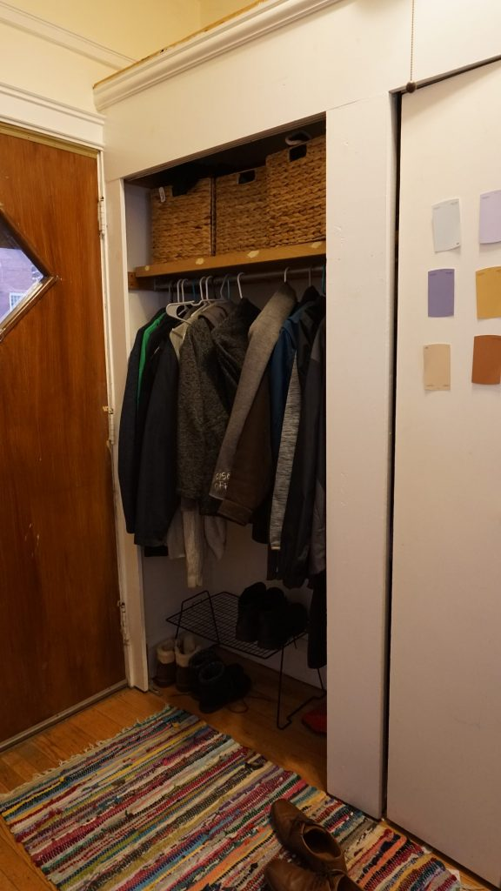
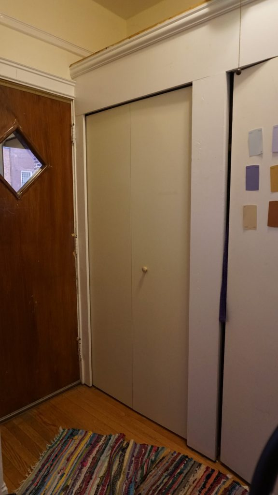
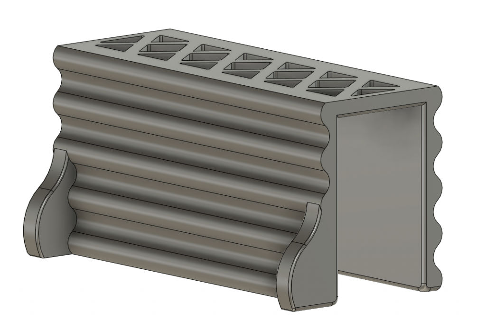
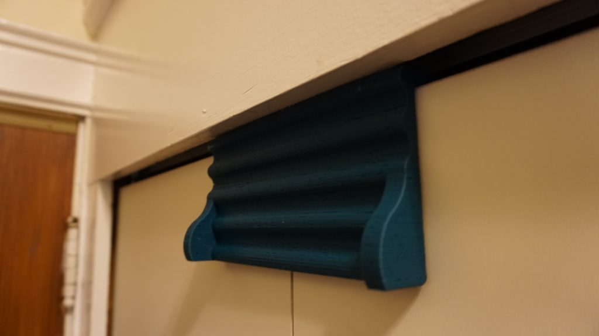

Yesterday I install a new closet door in our front entrance hall, and discovered a problem which I then solved with 3D Printing. The door is a standard bi-fold type, with pins in the top and bottom of one side for rotation, a central vertical hinge, and a track along the top to keep the far side in alignment.
 The problem was - with the volume of coats we need to survive a the winter on the ice planet Hoth (Chicago) and the positioning of the hanger rail, the coats push the door out and prevent it from staying fulling closed. Given that this is immediately adjacent to the front door, not an ideal solution at all.
There are lots of types of locks/clasps/magnets designed to solve this problem, but the one I chose to emulated is this over-the-door babyproofing product. It's essentially a c-channel of plastic that slides over the middle-hinge when the door is closed, to prevent it from swinging open. Genius.
I created my own variant in Fusion360, thinking about how to make the design rigid, printable, and aesthetically pleasing. I added ridges along the sides to increase its lateral strength, and little pull-tabs to make it easier to grip. I trussed-out the top to give it some additional strength and reduce weight. Here's how it ended up after about an hour of drafting:
Printing took a little over 10 hours, and the final result works great. I selected a blue-green PLA+ for ease of printing and aesthetic considerations:
Thanks 3D printing!